|
pakku :: 哔哩哔哩弹幕过滤器 |
|||
| 弹幕合并 |
合并时间差在 秒之内的重复弹幕 * 在低配电脑中，超长（大概 60 秒以上？）的阈值可能会导致程序运行缓慢 根据编辑距离判断不完全一致但内容相近（例如有错别字）的弹幕
* 能有效击杀 " 根据 2-Gram 频率向量的夹角判断不完全一致但内容类似的弹幕
* 能有效击杀 " 将常用汉字转换为拼音再进行比较
* 能有效击杀 " / / |
||
| 例外设置 |
强制合并：（符合这些规则的弹幕，在比较是否相同时会先进行替换） 强制忽略：（符合这些规则的弹幕，即使内容相同也不会被合并） 取消勾选后，底部弹幕不会跟滚动弹幕合并到一起 / / |
||
| 显示设置 |
，仅当数字大于 时显示 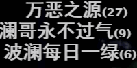 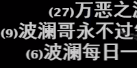 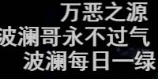
超过5条弹幕合并后字号将相应变大，避免内容被忽略 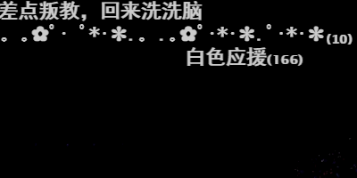 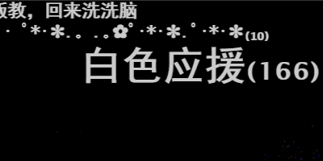 如果视频中瞬时弹幕密度过大，将动态减小字号，避免遮挡画面 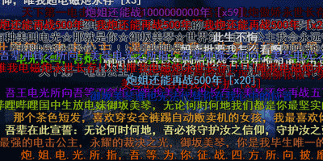 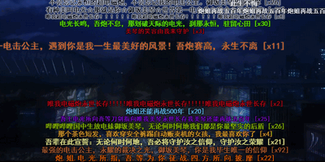
滚动弹幕和顶部 / 底部弹幕合并后显示在顶部 / 底部 |
||
| 播放器增强 |
在弹幕列表中点击即可显示这条弹幕的详细信息 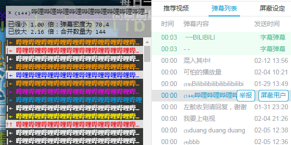 * 弹幕渲染类型选择“CSS3”后，也可以按住 Ctrl 键点击画面上的弹幕。 * 还可以查询弹幕发送者。 感谢 @dramforever 播放器自动化：弹幕载入后，自动 / 在进度条上方显示弹幕密度（仅当鼠标移过时显示） 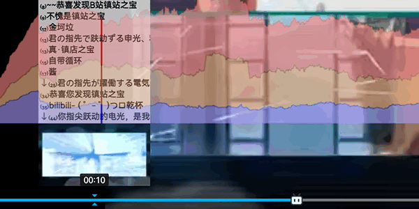 |
||
| 实验室 |
过滤包含 如果你发现很多刷屏弹幕没有被过滤，请选中本选项 * 选中后，观看视频时将不会动态更新弹幕，也不会显示在线人数。 弹幕黑名单： 前去设置 不显示重复数量大于 的弹幕 * 设为 0 来禁用此功能 将总长度超过 像素的底部、顶部弹幕转换为滚动弹幕 * 设为 0 来禁用此功能 |
||
| 其他设置 |
在右上角的 pakku 图标上显示合并了多少弹幕 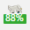 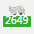 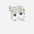 * Tips: 在视频页面点击 pakku 图标可以查看过滤弹幕的详细信息 （有一些 复杂的设置 现在没有 被隐藏了，一般人不需要修改它们。） 此功能需要浏览器支持。（设置丢失？点这里 抢救本地设置 ）
|
||
| 关于 |
xmcp/pakku.js 在 GitHub 开放源代码。 使用 GPL 3.0 协议。 我，开发者，打钱 →投喂开发者← (｀・ω・´)
觉得 pakku 很赞？
请把 pakku ( 给个五星好评吧！ Chrome 用户点我评分 （需要魔法上网）； Firefox 用户点我评分 。 想要更多功能？ 把你的脑洞 知乎私信给开发者 或者 丢到 GitHub 上 全部运算都在本地进行，我们不会收集你的B站账号信息和观看历史。 Privacy Policy |